T H E 1 2 L I G H T B O D I E S
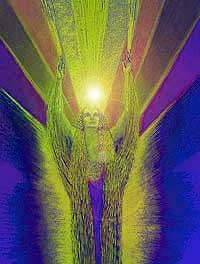
Light body activation are infusions of Light that actually take place in the physical body. Certain cells in the body are activated and then cause the resultant changes. Many of us have had at least the third level light body activated since 1989. Where are we actually? It is essential to know all the stages of light body activation. Not just starting from stage three, but from stage one and stage two.
The light body activation are changes in our physiology. These are tangible changes in our very cellular structure. In energy terms it is indeed very abstract or intangible. Energy works in ways where very often the conscious mind is unaware of the changes. The Earth has a Divine plan. This divine plan includes 12 light body activation for planet Earth. As we are all part of planet Earth, we earthlings will also have 12 light body activation.
The first activation took place in 1988. An infusion of light, which lit up the dormant cells. It was “time to go home”. We start from the point of merger/separation, then move along one hemisphere of this circle which is the separation hemisphere, come to a centre point, and then we start upwards on our journey back to the original point. The second hemisphere, is the journey home. At the exact midpoint that you have travelled, is the first light body activation. Now the cells know that “I will have to change my chemical composition and functioning for a journey that’s going to take a different route.
The cells know that it is time to go home. The body reacts instantly, the changes are on a cellular level. It begins to start loosing its density. The emotional debris, the toxins that have built up all are shed. The chakra systems and the layers of debris. All the debris starts loosening, the toxins are released.
Mutational symptoms start occurring, because our physical is actually mutating, changing its very structure. What are these symptoms? Headaches, fevers, diarrhea, vomiting, nausea, muscle spasms, joint spasms, rashes, acne, boils, skin eruptions; a vast array of symptoms. Depending on your body structures it will not be the same for everyone.
Most of us may have also gone through one or more very severe illness. That illness was because the light body activation took place rapidly from one level to another without allowing the physical to settle down from the first into the second. These were very rapid light body level activation. The physical body almost had a collapse, making it require a rest. You are now aware that probably you went through these mutational symptoms that accompany the dropping of first level density.
The DNA hold in it the genetic patterns of everything created. The latent encodements are within, which will activate with every light body activation. Your DNA holds genetic material of every species on earth as well as holographically encoded information of all your collective experiences. It also holds latent encodement for mutation of your physical body.
First Level Lightbody
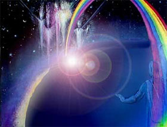
A profound alteration took place with the first light body activation.The light activated a series of latent encoded information by infusing colour and tone. The cells mutated first.
Light body levels are measured by the ability of your cells to metabolize. The cells had to change their ability to transform other forms of energy into pure energy.
The mitochondria are used as power- houses or storehouses of energy because they are capable of this transformation. So they would take in food and transform it into energy.
First the DNA encodements relevant to the light body activation literally light up. New directives are given to the cells. The first directive is to now recognize Light as its energy source along with food. For the first time in human history, the cells will recognize Light as its energy source. Now, the cells know that not only food but this light that is coming in, is also an energy that it needs to metabolize. And a process of ATP* to ADP* and back to ATP keeps taking place continuously very, very rapidly. Although it might seem as though it's such a waste of energy coming in, it isn't, because these rapid changes actually causes the vibrations of the cells to increase, and therefore takes us to higher vibratory levels.
In the first level activation, the synapses in the brain actually increase in number. Several more synapses are formed which mean a larger number of spiritual impulses can come through. This is the point when body density is released. Accumulated toxins, physical, mental, emotional, are released due to increased metabolism. Then there comes a time when your cells learn the new directive given to them, get used to this infusion of light and settle down. The new vibratory level has settled down again to a comfortable pace.
The toxins are not being released as quickly, till the new infusion of light integrates. The whole process starts churning again; again you get your physical problems. Many of us are able to understand now that we are releasing; we are able to say "It's a release of my negativity." It is in a sense physically releasing your toxins because of a further infusion of light.
What happens to the brain at this time? The brain has its right and left hemispheres. Each hemisphere having its own function. As soon as there is infusion of light the right and left hemispheres recognize a change in energy. This is translated by the brain. The Pineal gland and pituitary gland begin to increase. The start increasing in size, otherwise this light infusion will not be handled by the physical brain cells.
Pituitary and pineal glands that are atrophied to pea-size begin to grow, till they reach their actual size of a very large walnut. As soon as pineal and pituitary glands begin to grow, brain chemistry instantly changes and the brain actually begins to produce a larger and larger number of synapses. Synapses are junction points between nerve cells.
When an impulse is sent by the brain, it
travels through the nerve to the fibers. When the impulse reaches the end of
the fiber, it uses a chemical which is released by the fiber. This helps
that impulse to jump from one cell to another. It goes to that cell, the
nerve fibers, releases a chemical, and jumps to another.
If you have more synapses produced by the brain, the obvious result is a
greater volume of impulses that can now be simultaneously processed by the
brain. Leaving you open for
spiritual impulses, which can be interpreted as impulses from light energy.
With light body activation, the intuition of a person also gets sharpened.
* ATP is an energy storage compound, its work is to store energy. It helps the mitochondria, to convert food into energy, which is then stored in the cells for later use. Being a triphosphate, it has 3 phosphate groups which it projects outward from the molecules. When it loses one phosphate group, it changes into ADP, because now it is projecting two phosphate groups. When an ATP molecule sheds it's outermost phosphate group it becomes ADP. This breaking up of this chemical from triphosphate to diphosphate releases energy for the cells to function by creating proteins. So it takes in the food, with the help of ATP, converts it to energy and stores it. When it has to be released, it gets converted to ADP which then releases this energy for use. In times of acute stress, this takes place in a huge burst of energy where this person says "I got some supernatural energy". Nothing supernatural just the cells receive impulses from the brain. The brain is telling the cells, "Release instantly and in large quantities; help is required here". And an instant response to the brain impulse releases this energy in a huge burst making you feel and be able to show such physical superhuman strength". When the energy is released, it creates proteins in our body, and you know proteins are our muscle builders. Food, body, and muscles, everything works with synchrony to take us to physical health.
Second Level Lightbody
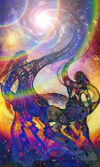
In the second level light body, the 6th dimensional etheric blueprint, which is in our etheric body, is flooded with light because the physical body has already started making its changes. The axiatonal meridians have already started activating the cells. Greater infusion of light are coming into the physical. It comes first through the etheric body. The etheric bodies are completely flooded with light. When that happens they release four dimensional structures, which then work on the physical plane.
The release of these structures from the etheric body, make us experience every single karmic experience that we have undergone. All the karmic experiences will now come back into manifestation in some form or the other. They have to. You have to relive them in some form. The stronger those experiences have been and the stronger the karmic ties are, the stronger will the manifestation be in the present life, and in the physical.
Life seems to take on a see-saw phase, where
you have no idea why you are being tossed around by destiny. Things seem to
collapse around you. Structures and pillars that were your support systems
suddenly seem to be pulled out from under you. You go through phases of your
life which you would rather never repeat.
Because you are experiencing karmically all that you need to. Because you
need to activate the karmic memory, which in the future light body
activations, you will be asked to resolve. Unless memory is jolted how
would we resolve these experiences? The push and pull of life are events
triggering all your subconscious memories. Asking you to remember. When
friends fall away, memory is activated of a past when friendship may have
been abused. Thus the memory jolt.
In these experiences there is a feeling of disorientation. Life seems topsy
turvy? The actual physical
symptoms in the second light body activations, are very flu like. Fever
which may not register, and yet one feels feverish. With eyes burning and
tired all the time. The first light body activations also gave the same
feelings. Exaggerated, the symptoms are now magnified as there is even
greater infusion of light.
Introspection comes with second activation which is wonderful.
Questions of –
"Who am I?
Why am I here?
What is this universe?
What part do I play in this universe?"
In separation one does not realize that everything is unity and therefore
placing ourself as separate entities. You may have chosen to experience the
hurt of what your friends went through. Understanding that hurt and what
rejection feels. The experience, once completed thereafter resolve the
entire situation without any kind of selfflagellation. There
is no good and there is no bad. It's just that one is caught in a game of
separation.
Questions start appearing, which for the first time makes you recognize Spirit. We know about "soul" we do not recognize "Spirit". Spirit is the undifferentiated Light, that is in connection with the Source. Our soul is the differentiated light that exists within physical embodiment. For the first time we are not looking at soul, we are looking at Spirit. "What is my connection to Spirit? Am I Spirit? If so, then what is Spirit?" Questions come into the lower mind for the very first time with the light body activation on the second level.
With this recognition, the spin of your
emotional, mental and spiritual bodies increase.
Though the changes are, by and large, on the etheric, they affect the physical only through these flu-like symptoms and the disorientation in your life.
Third Level Lightbody
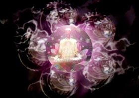
The third level light activation is physical based like the first. The physical senses are beginning to get sensitive. Extrasensory, you may hear white sound. Eyesight may suddenly improve. Your senses radically deteriorate and then suddenly change back to maybe better than what they were. The unexplainable, happens to the physical senses as soon as the third level light body activation takes place.
With third body activation a lot of souls wish to come in to take the Earth through her ascension process. What are the various changes we have in our physical? We have in our physical system, something which is known as a bio- transducer system. What does this bio-transducer do? It is designed to decode and work with higher light energies, as well as transmit these energies to the planet. Before activation it stays atrophied, it stays dormant.
After the Second body light activation is
through, which means the etheric bodies have been flooded with light, the
bio-transducer 'wakes up'. It
knows that it has to decode that light. Light
is information. The
bio-transducer decodes this information that is coming through. Where does
this Light come from? It comes from your 5th dimensional axiatonal
meridians. The meridians activate points on the surface of the skin. They
also activate the lymphatic and the circulatory system. The physical cells
go into a spin that is extremely fast.
When the light is coming into our cells, the mitochondria recognizes Light as an energy source and produces more ATP. The cells take in greater quantities of Light as 'usable energy'. It feels as though an electrical current is going through you rapidly, often felt during meditations. ATP is changing the light at a very rapid pace into usable energy and transmitting it to your physical.
As the meridians feed energy from the Oversoul into the cells, the spin points in the cells produce Colour and Sound and Light frequencies which are released into our body. Our bodies are actually converting energy into these three frequencies. When a colour attracts you must wear it, even if it is 'ghastly'. Your body needs that particular colour frequency.
A vast amount of information is compressed in our bodies. With red, blue, green, spectrums. With light coming in RNA becomes a two way messenger. It takes instructions from the DNA to the cells and it takes the Light and sends it back to the DNA for decoding. There are cells only meant for the purpose of decoding. As soon as it takes in Light and sends it to the DNA for decoding the Light is changed into something beautiful by the ATP. The Light is broken up into prismatic colour spectrums and sound spectrums. DNA codes are activated.
The DNA codes send a blue laser beam over the light, all the blue information gets decoded. Then it sends a red laser beam and instantly all the red information is decoded. Simultaneously colour beams are being flooded out from the activated DNA. It works synchronistically the DNA decodes the Light and gradually releases this data causing the gradual mutation of the physical. This activates further DNA. So further Light is decoded, and so on. This information coming into your actual physical structures through the RNA, send the cells into a spin.
The RNA-DNA information transfer and
the ATP-ADP energy cycle.
Earlier these were closed systems, they are now fully open and make infinite energy and information available to the body. A dialogue starts between the physical and the spiritual.
With the complete ascension of the Earth there will be no physical and astral planes left. This process is called the 'in breath of the Source'. The Source manifests in 'in breaths' and 'out breaths' of creativity. The out breaths are very slow; the in breaths are very rapid. The process of individuation is the out breaths of creativity and the process of 'going back home' is the in breath of the Source.
Fourth Level Lightbody
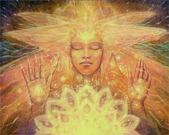
In the Fourth level of Activation, the changes now take place not on a physical level, rather on a mental level. The mental body is now going to get activated, completely infused with Light. With this the brain chemistry greatly changes as do the electro-magnetics of the body. Whenever the etheric bodies are infused with light physical symptoms have to be experienced. The crystals in your etheric body may become uncomfortable and you may start having cluster headaches, seizures, chest pain, blurry vision, or your hearing may go out.
The hemispheres of the brain want to begin to start firing across both hemispheres at the same time, and you may literally feel electrical energy running across your scalp or down your spine. At this point you are usually directed to follow Spirit without hesitation or something similar. Your Spirit begins to put through much wider, vaster pictures of reality or patterning through your energy bodies.
Deeper and deeper levels of the heart are being activated. The heart is no more only a physical organ, because it is going into a 4th level activation ready for the 5th dimension of love and Masterhood. It has to change its form. Not only pumping and taking, it has to do something beyond. When it opens up there maybe excruciating chest pains if earlier there was complete closure.
And then something happens which is great, which is what is happening to the Earth now. The regulator crystals within your etheric body cause the mental body to begin a radical shift. It begins to view things differently and questions all the 'realities'. It begins to accept all the wider realties and patterns that Spirit places into your energy bodies.
Fifth Level Lightbody
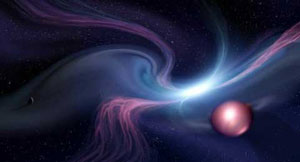
In the Fifth level of activation, the mental body is greatly agitated. The mind goes through its little play of trying to shut down its emotional body, so that spiritual impulses do not enter. With the great infusions of light, there is recognition, that there is Spirit. Recognizing Spirit there is a need to re-evaluate beliefs, attitudes and our thought processes. There is a greater willingness to say "I could be wrong", and that there maybe another way of being, living, feeling, of reacting. This shift continues with the 5th level activation. The mental body exploring tentatively is still unconvinced that spirit exists.
You may begin to have some flashes of yourself doing other things. Often, your dream sequencing begins to change. You begin to remember a little more of your dreams. Some people open up to lucid dreaming in the fifth level.
You may begin to experience non-linear thought processes. A lot of survival patterning may start to come up out of the mental body as these patterns begin to drop out. The intelligent mental body realizes that the only way to survive this change is to change itself. What your Spirit needs you to do is to get your mental body to surrender its control so that you can become an active embodied Spirit on this planet, fully conscious on every dimension.
Naturally there is a conflict between the mental ego and the spirit. Spirit through Light is now trying to get dominance over ego to become a active embodied spirit.
Gradually, it will start controlling the mental body. The purpose to be on all the multi-dimensional consciousness.
Spirit makes the mental body aware of a greater reality.
Is this truely my reality?
What are my beliefs?
What is my truth?
In the subtlest way spirit works on the mental body and with this new ways
to think, it blossoms. Aha! These
structures of beliefs, feelings attitudes have closed me in.
Also in the fifth level you being to become aware that a lot of your pictures about the way things are aren’t yours. You may realize you are doing things like your mother or father, acting out their reality not yours. You become aware that you contain entire pictures of reality that are not yours. And you begin the mental sorting out process of “Who am I”, as different from those around you. Everyone holds within their energy fields, the entire picture of “the way things are” from their parents, grandparents, siblings, and lovers. The entire picture is updated continuously. As you become aware that these structures are contained in your fields, you can feel very closed in by them.
Sixth Level Lightbody
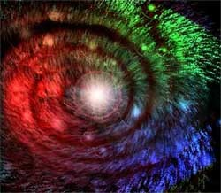
The Sixth level seems to be wonderful. You will experience "you". For thousands of years we have never learnt to be who we are. Spirit is still being explored. Old structures are broken the new is unknown.
In the sixth level of Lightbody you are actively, consciously shifting reality pictures out of your field. At this time, your Spirit is usually putting you into contact with people who are working with the Lightbody process. Maybe Spirit is throwing books at you off of shelves. You begin to take in vaster understandings of your own reality and how you operate in them.
Often, in the fifth and sixth levels, you have experiences of things not being solid. In your meditations, you may look down and sense that your hand is not solid. So you may be having flashes of multi-dimensionality. You may be having flashes of non-linear thinking and feeling like nothing is real. This can be a real shock for mental-body types.
For some it is a time to contemplate “Do I want to be here? Do I want to look at all this stuff? Do I want to be a part of this process?” A lot of people opt out and that’s okay. They are doing this process in another life. You don’t have to do it in all of them. This is a very painful stage because this is the stage where the entire sense of identity is restructured. You go through a re-evaluation state this is extremely uncomfortable.
Divinity was seen as immense, but Ego encases you in worthlessness. Self worth is at the lowest, feeling useless and worthless. Instead of exploring your divinity, the choice is to explore limitations. It is just a different way of reaching the same point. Fortunately on 6th level light body activation there is no going back. At times 6th body light activation is the extent for many life times. Higher activation is indeed your choice and there can be no judgments to this.
This is a time when you’re likely to change your job, get married, stop being married – all your friends may change, your entire sense of purpose changes and there’s a sense of learning to not be afraid of change. Learn to relax and let everything flow around you. New people will come into your life who are far more in alignment with what you’re here to do that you’ve ever had before.
Imagine the confusion of this soul?
All the soul needs to do is "flow". Not to freeze up in fear. Allow the
changes to come. Allow people to
leave your life. Allow yourself
to be restructured. The greatest
change is an emotional change. You stop holding grudges. Walking
away from people who do not need you may be painful, but this is the
emotional shift that you make. Allowing
them freedom to be who they need to be in the "now". Your energy is not
entangled with theirs. Letting them go you need not retaliate with further
anger and hate.
On the planet right now, there are a majority of people with 6th body
activation. Some are experiencing "heaven" on Earth and others are
experiencing "hell" on Earth. If
you do not freeze up, the 'descension of spirit' takes place, spirit
descends and comes to reside in your body. You
experience spirit in your very cells, and you see Light in different
colours,
get 'flashes of communication', and become more clairvoyant and telepathic.
Seventh Level Lightbody
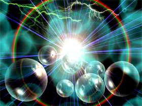
In the Seventh level activation, the focus now moves to the heart chakra.
The heart chakra is now going to open up at deeper and deeper
levels. Emotional blocks at deep levels get opened and there are no
restrictions to your 'vastness'. Feelings
get intensified, sadness, anger, and happiness and expression is easier.
You begin to live in the Now.
The mental body lives in the future.
The emotional body in the past.
At this point, if you’ve got blocks in the emotional body. They really begin to come up, because as you move toward expressing your divinity and your vastness, anything that blocks that vastness begins to release. Some of its fun, some of its not. It depends on how much of a stranglehold the mental body wants to keep. If the mental body is in sync, the release is usually quick and easy.
At this time we also start to shift from karmic relationships to non-karmic relationships. We have shifted away from emotional entanglement, attachment, but are fully conscious at a very subtle unacknowledged level. We are actually embracing “in love”.
The physical heart has a membrane, which is called ironically "The Gates of Eden". The membrane is Forgetfulness, veils of separation.
With the Seventh body, the membrane disappears, without you having to do
anything. "Such a being of light has to live in
It is not heart attack pains; it is in the space in the centre of the chest and it seems to radiate out everywhere. As you open into the heart, a feeling of connection with the planet opens up: that feeling of falling in love with this planet, feeling like “If I don’t hug that tree, I just can’t make it. I have to hug that tree.” There’s a playfulness that begins to open up at the seventh level of Lightbody. You become a little more childlike in the way you operate.
You have to work now. There maybe no knowledge of light activations and their symptoms. When this happens put your hand over your heart. Eventually it will stop. This little gesture is an affirmation of how you love yourself. The deep emotional heart is opening up at the deeper seventh level. T he heart fibrillation and the chest pains happen especially to those who have a problem expressing and receiving love. The heart will manifest physical symptoms such people.
The way most chakras are portrayed is that they are conical, narrowing in the centre, and spinning. Well, they are mutating too. First they become spherical-shaped and they radiate in all directions at once. Then, if the heart chakra takes predominance, it all begins to open up and the chakra system merges into what we call the unified chakra. It’s a unified field. It feels wonderful. When you do something like the Unified Chakra meditation, you assist your Lightbody process.
Assisting that chakra merger also assists those energy bodies – the emotional, mental and spiritual bodies – to begin to merge. The merge into a unified field and in the seventh level those chakras are kicking into merged states that they haven’t been in before. At this point your physical body will take in as much light as is poured in without any damage caused to it. Now there is no fear in the cells. Vast amounts of energy come in. You glow and bloom. Because your heart is so open, you are living in Love.
As the bodies merge, residuary survival issues that need to be tackled will strongly come to the fore. The opening of the pituitary and pineal glands can sometimes cause heaviness at the top of the head and the back of the neck. Now the 4th eye opens up and with this opens up your multidimensional sight. The 4th eye is the 'soft spot' on the top of your head which may give stabbing pains if there are etheric blocks.
Often at this stage persons begin to function as Fourth dimensional persons. 'awakeners'. All light workers have two traps; Spiritual significance and spiritual ambition. They are both our defence systems. Spiritual significance is a defence against shame and worthlessness. Spiritual ambition is our defence against guilt and incompetence.
Eighth Level Lightbody
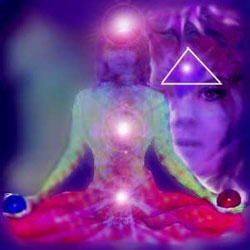
Dealing with experiencing Spirit completely, the brain is undergoing a
change.
It can get unsettling. When physical changes take place in the brain you
experience that which you had not earlier experienced. You
wonder if you have Alzheimer's. Physical
symptoms of all the levels are very close to actual physical illnesses. If
the physical symptoms persist be responsible to get it checked. If
these symptoms are because of Light activation, no test will show anything. It
is light body activation. We are all going through light body activations.
The physical does get 'traumatized' because of infusions of light.
At the eighth level of Lightbody, the pituitary and the pineal gland,
generally about the size of a pea, begin to grow and change shape. As
they grow, sometimes you will feel pressure in your head. You
may or may not have headaches off and on through this process. Ask
to increase the endorphins in this area and ease off the pain of the
mutation process. The brain gets
bigger and you may experience cranial expansion.
As you transition into the eighth level of Lightbody, there is an activation of what we call the seed crystals. These three small crystals receive Light languages from the upper dimensions. Two of the crystals are located over your eyebrows, directly over the pupils if you are looking straight ahead. The third one is just below your hairline, in line with your nose.
There is also an activation of the recorder cell receiver crystal (on the right side of your head). In the higher dimensions, there is a structure called a recorder cell crystal that holds vast amounts of information that the soul has gathered over many incarnational cycles on various planets and stars.
Periodically, the recorder cell will download parts of the experiential data into the receiver crystal. When this happens, many people feel a tingling, burning, or liquid sensation in the area of the head where the receiver crystal is located. Suddenly they have all this information and they can’t figure out where it has come from.
These four spots, three seed crystals and the receiver, are activated. When the activation takes place, the 'unsettlement' starts. You begin to experience geometry and tones, you don't see things in the shape they are meant to be. You may see, up near your eyes, or you shut your eyes, helixes and tetrahedrons . You will hear ringing in your ears which is extremely uncomfortable. You see flashes of light. You will see colours. You begin to see in front of your eyes, various symbols or signs, words of a language you don't know. And you are wondering "What does it all mean? Seeing things but I don't know what it is.' By now, the unification of your chakra system has begun, which affects your mental, spiritual, physical, etheric fields.
Your brain functioning begins to change and you begin to perceive and think in terms of geometries and tones. You may have problems remembering things or projecting into the future. The big joke about eighth level of Lightbody is “To gain the 95% of my brain that I haven’t used, why did I have to lose the 5% I already had?” All of the pathways in your brain that you are accustomed to using may become non-accessible while entirely new pathways are being created.
You ask for the ability to translate this information coming in. This is the Language of the Light. You are feeling something but there are no words to really describe what you are going through. Ask for a translation faculty and you keep asking. Don't stop. It will not be given to you that easily. The faculty is given to you at the level of the 9th activation.
What happens in personal relationships, friends, relationships, job. On the 7th level we experiencing changes in personal relationships. Now Spirit is directing you. All those persons who wish to hook you through coercion, manipulation, emotional blackmail, and so on, will suddenly start falling away. In the 7th level you had already begun to change the way you related to people. People will go. Friends will disappear and you feel a sense of being alienated.
Now your only focus is development of Spirit in Action. Spirit Will now guides you to those who are now meant to help you through the remaining four levels of activation. Going through the process is not an option. When you desire to go through the process, that's an option.
Ninth Level Lightbody
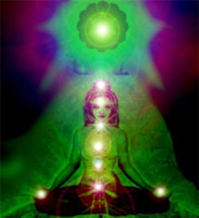
Not allowing ego to lead out of habit only with choice. In the Ninth level, only Spirit guides you. At Ninth level you are at the threshold of the Tenth dimension.
At the Ninth level activation, most people go through a phase of 'no sex'. Sex becomes something the physical does not need. There is genuinely no desire for sex. You will again want to have sex but now completely Spirit decided choice. You do what you need to do because Spirit wants you to do it.
As you transition into the ninth level of Lightbody, the translation opens and you begin to understand tonal languages. It becomes something you can recognise, instead of it just affecting you. These geometries and patterns that you’re working with in your mind become coherent: they are a language. Your Spirit is using these languages to shift the sixth-dimensional structure of your blueprint into a new template for your fifth-dimensional Lightbody.
You are beginning to embody Divinity. The seventh-dimensional threshold may activate, causing lower back or hip pain, and a feeling of density in the pelvic floor. The seventh-dimensional structures are shifting into alignment with your Oversoul. New Alpha/Omega structures are opening around the physical body, allowing more energy to pour in.
The fifth and sixth dimensional etheric structures are coordinated through the seventh dimensional alignment with your Oversoul to receive a new Adam Kadmon Divine Image. You may, at this point experience body shifts. You may find yourself a whole lot taller, or whole lot thinner, or bigger, or you may grow wings. You may become aware that you have other body types than that of a human. And you may begin to integrate non-human identities into the human body.
The pituitary gland is opening further and producing more growth hormone. In some women an oestrogen imbalance may occur. You may feel exhausted, depressed, and alienated. Sometimes your periods may become irregular, or you may have changes in your flow.
You are not interested now in what anyone thinks or says about you. This is a great shift. Till this stage there are a few fears, here and there. But with this shift you completely experience yourself as Spirit In Action. The ego is getting weaker and the choices that you make are more Spirit led.
Now you are joined with Christ Oversoul. This means the highest level of your higher bodies are now one with the highest level of your higher selves. You are hooked up with all of them, and are getting ready to join with the Divine Oversoul, and The Source.
The three fold flame, Divine Truth, Divine Love and Divine Light, expands and burns bright. You will speak nothing but divine truth. You will feel nothing but divine love, and you will emanate nothing but Divine Light. When this happens you are in the 10th level where you now manifest the abilities of an Avatar.
So, as you began the shift to the ninth level of Lightbody, you began a very
powerful shift to your multi dimensional self. You
are making it real and manifest. The
master that you are. We came to
this planet to master the limitations of separation. Now
the game is shifting into who you really are in your vastness.
In the 9th, 10th, 11th and 12th level all the work now is done in the etheric. When you have passed the 8th level, you have surrendered to Spirit completely. Not allowing ego to lead out of habit, only with choice. In the 9th level, only spirit guides you.
Tenth Level Lightbody
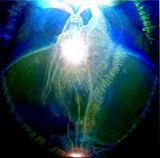
In the tenth level, you begin to manifest avatar abilities. That means that you can be exactly where you want, when you want. Teleportation and manifestation come in at this level of Lightbody, because you are fully conscious of being one with the Source and being everything. When you are All That Is, what is not you?
You are the universe, recreating itself according to your pictures of reality. At the tenth level you finish the hook ups and operate from your vastness, from what is called your Godself. You feel connected to everything.
You begin to build a Merkabah vehicle within your energy structures. This
crystalline Light structure allows you to pass through space, time and
dimensions completely in your totality. The
Merkabah has a consciousness of its own. You
construct this crystalline Light structure out of your own fields, with the
assistance of your Spirit. You
now begin to work consciously according to your axis. Merkabah
is the chariot for Spirit.
The space brotherhood while building their own Merkabahs, hook up their
merkabahs to each other's and make a huge vehicle that encompasses the
planet that is about to ascend. They have created this huge vehicle which
now completely encompasses any planet that is in the ascension process as is
the Earth.
What do the Ascended Masters do? The directors and the navigators. The Ashtar are a group of extra-terrestrials. Their Commander-in-Chief, an Ascended Master. The Master navigator is here to guide the Light vehicle created by the Space brotherhood. Guiding the Ashtar brotherhood, so that the planet Earth can physically move out of this Solar system into a multi-star system. There are systems where you have more than one sun. Those are the highly evolved systems. We are only a one sun system. The Ashtar have created the vehicle for this movement and the Ascended Masters are navigating this ship, this Merkabah, for the Earth to move out of this solar system into a multi-star solar system.
What of the angelic realm? They are there to help the space brotherhood and the ascended masters. Truly selfless and dedicated workers. When the Earth moves, these workers will then decide whether they want to go back into energy form, which means merge with the divine energy again, or they want to take on a light body and move into a different system. Once this planet moves the third dimension will collapse, which means generations hence will not understand what the third dimension really was, because it has collapsed.
The Angelic function -moving into Lightbody or returning to pure energy
form. As incarnate Angelics, your energy is the fuel for this process.
The Space Brotherhood – hooking up all the Merkabah vehicles to link
them around the planet forming the planetary Lightbody – literally
building the vehicle for this planet to ascend.
The Ascended Master function – This axis will act as directors and
navigators. They are here to work with the coordinators for taking this solar system out of this area to a multi-star system.
Eleventh and Twelfth Lightbody
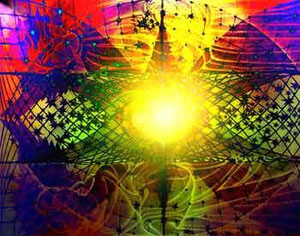
At the end of the ninth level the universe considers you Master and treats
you, supports you, as such.
Then in the 11th dimension we shall decide whether we want to continue as Light workers and ascend with the Earth. We shall decide whether we want to be light bodies and ascend ahead of the Earth. For the first time choice is given to you to ascend ahead of the Earth in the Eleventh activation.
You are operating fully from your God-self and there is no separation. You
have now caught up with your Spirit. Time
is speeding up to the point where it becomes simultaneous.
Or you decide neither and you decide to be one with the Source again.
Only a living Master can be given that choice, to continue with the Earth, ahead of the Earth or merge with the Source. And in the Twelfth the decision that you made in the Eleventh is implemented in its entirety. So if you decided to merge in the Twelfth dimension you will be the Source. If you decided to move with the Earth as the Earth moves, you will move.
At the twelfth level, you act on your decisions about what to do. They may be hooking up with other people around the planet or all kinds of things. This is the final activation of the Divine Plan for planet Earth. This planet goes to Light, shifts out of this dimension and is brought into a multi star system.
Everyone is in Lightbody, and follows their Spirit in total sovereignty and total mastery. Then the whole way back is the expression of the return, at every level of your identity and at every level of your being, as you return and experience your Source.